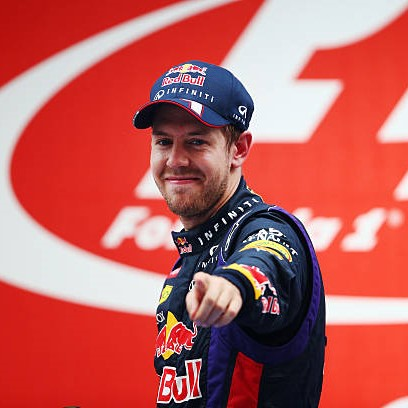

Biographie

Débuts en sport automobile
Soutenu d'abord par sa famille, Sebastian Vettel, qui pratique assidûment le karting depuis 1995, accroche notamment à
son palmarès une victoire à la Coupe de Monaco de karting et la course junior 1 des Masters de karting de Paris-Bercy en
2001, année où il est champion d'Allemagne junior KF3.
Il termine également sixième du championnat européen de Karting
ICA l'année suivante. En 2003, il fait ses débuts en sport automobile en championnat d'Allemagne de Formule BMW.
Il fait
d'emblée forte impression en terminant second de la discipline. La saison suivante, il poursuit sur sa lancée avec
l'écurie Mücke Motorsport et remporte haut la main le titre avec 388 points sur 400 possibles.
2004 avec le soutien de
Red Bull marque un tournant financier pour la famille Vettel1.
En 2005, l'Allemand passe à l'échelon supérieur en Formule 3 Euro Series et se classe cinquième et meilleur débutant
d'une saison dominée par les pilotes de l'écurie ASM, Lewis Hamilton et Adrian Sutil.
Toujours présent en Formule 3
Euroseries en 2006, il s'affirme comme l'un des candidats au titre mais, à l'issue d'un long duel, s'incline face à son
coéquipier chez ASM Paul di Resta et termine vice-champion.
Il fait également sensation à l'occasion d'un meeting de
World Series by Renault à Misano en juillet 2006 en remplacement de Colin Fleming où, pour ses débuts dans la
discipline, il se classe deuxième de la première course du week-end, avant de s'imposer dans la seconde après avoir
signé la pole position.
2006-2007 : premiers pas en Formule 1
Sous contrat avec BMW depuis 2005, Sebastian Vettel effectue un premier test en Formule 1 en septembre, pour le compte
de l'écurie Williams-BMW, puis un second en juillet 2006 chez BMW Sauber. En août, à partir de la Turquie, il est promu
troisième pilote BMW Sauber après la titularisation de Robert Kubica en remplacement de Jacques Villeneuve.
Ses
performances sont rapidement impressionnantes compte tenu de son jeune âge (19 ans et 2 mois) : il réalise le meilleur
temps de la première séance d'essais libres du Grand Prix d'Italie.
En 2007, tout en participant au championnat de World Series by Renault, il poursuit son rôle de troisième pilote chez
BMW Sauber. Présent en piste lors des essais du vendredi à l'occasion du Grand Prix d'Australie et de Bahreïn, il voit
son activité réduite lors des semaines suivantes, mais l'indisponibilité du pilote polonais Robert Kubica laissé au
repos par les médecins à la suite de son accident au Canada, lui permet d'effectuer ses débuts en course à l'occasion du
Grand Prix des États-Unis à Indianapolis.
L'Allemand se classe huitième, décroche son premier point en Formule 1 pour sa
première course et devient à 19 ans, 11 mois et 14 jours le plus jeune pilote de l'histoire de la Formule 1 à inscrire
un point (record battu en 2015 par Max Verstappen).
2007-2008 : titulaire au sein de la Scuderia Toro Rosso
Le 31 juillet 2007, la Scuderia Toro Rosso annonce que Sebastian Vettel remplace Scott Speed jusqu'à la fin de la
saison. Vettel effectue alors ses débuts de pilote titulaire en Hongrie qu'il termine à la seizième position.
Déterminé
à faire tout son possible avec sa monoplace qui n'est pas particulièrement performante bien qu'elle dispose d'une
mécanique Ferrari, il décroche une méritoire huitième place sur la grille lors du Grand Prix du Japon ; c'est la
première fois qu'une Toro Rosso participe à la session finale de qualification depuis ses débuts en Grand Prix.
En
course, il a l'occasion de parcourir ses premiers tours en tête mais, lors d'une neutralisation sous voiture de
sécurité, il est surpris par une manœuvre de Lewis Hamilton et accroche Mark Webber alors troisième, les condamnant tous
les deux à l'abandon.
La FIA, le jugeant responsable de l'accrochage, décide alors de le sanctionner d'un recul de dix
places sur la grille pour l'épreuve suivante.
Quelques jours avant le Grand Prix de Chine, Vettel se voit dédouané de
toute responsabilité dans l'incident avec Webber et la FIA retire sa sanction. Il se qualifie en douzième position mais
est pénalisé de cinq places pour avoir gêné un autre pilote pendant son tour lancé.
Grâce à un seul arrêt au stand et
bénéficiant de nombreux abandons à la suite de mauvaises conditions météorologiques, il finit la course à une brillante
quatrième place, son équipier Vitantonio Liuzzi terminant sixième. Il termine le championnat à la quatorzième position
avec 6 points et conserve son baquet chez Toro Rosso pour 2008, où il fait équipe avec Sébastien Bourdais, quadruple
champion de Champ Car.
Auteur d'un début de saison 2008 discret et marqué par plusieurs accidents, le pilote allemand confirme sa bonne
réputation en prenant progressivement l'ascendant sur Bourdais à partir du Grand Prix de Monaco qu'il finit en cinquième
position, inscrivant ses quatre premiers points de l'année.
Huitième au Canada et auteur par ailleurs de belles
prestations en qualifications compte tenu du matériel dont il dispose, son recrutement pour la saison 2009 est annoncé
par Red Bull Racing, où il remplacera le vétéran écossais David Coulthard, qui a annoncé son retrait de la compétition
pour la fin de la saison.
Le 13 septembre 2008, Sebastian Vettel signe la pole position à Monza, sous une pluie
battante. Le lendemain, la pluie tombe toujours, ce qui n'empêche pas Vettel de prendre un bon envol. À 21 ans, il
devient ainsi le plus jeune poleman et le plus jeune vainqueur de l'histoire de la Formule 1, détrônant Fernando Alonso,
qui avait remporté le Grand Prix de Hongrie 2003 à 22 ans (record battu en 2016 par Max Verstappen). Avec 35 points, il
termine l'année au huitième rang du championnat, le meilleur résultat d'un pilote Toro Rosso.
2009-2014 : les années Red Bull Racing
2009 : vice-champion du monde
À Melbourne, lors du Grand Prix inaugural, il s'accroche à trois tours du terme avec Robert Kubica alors qu'il est
second de l'épreuve. Il poursuit pourtant sa course sur trois roues et détruit sa monoplace dans un virage.
Cette
conduite dangereuse lui vaut une pénalité de dix places sur la grille de départ du Grand Prix de Malaisie, où il
abandonne sur sortie de piste.
En Chine, Vettel décroche la pole position et remporte la seconde victoire de sa
carrière, la première de Red Bull Racing qui signe son premier doublé grâce à la seconde place de Mark Webber.
À
Bahreïn, il est troisième sur la grille de départ et finit second de la course derrière la Brawn GP de Jenson Button.
Lors du Grand Prix d'Espagne, il ne tire pas partie de sa qualification en première ligne et échoue à la quatrième
place, derrière les pilotes Brawn et son coéquipier.
En principauté, après avoir perdu beaucoup de temps dans le premier
relais à cause d'un mauvais choix de pneus, il commet une faute et tape le mur à Sainte-Dévote.
Ce troisième abandon de
l'année, le handicape dans sa lutte puisque Button, le leader du championnat, signe une nouvelle victoire, portant son
avantage sur Vettel à 28 points.
En Turquie, Sebastian Vettel décroche la troisième pole position de sa carrière devant Button et Barrichello mais se
fait déborder rapidement par le pilote anglais qui remporte l'épreuve, tandis que Vettel se classe troisième de la
course derrière son équipier.
Après cette septième manche de la saison, il est troisième et pointe à 32 points de
Button.
À Silverstone, il obtient la pole position, décroche son premier meilleur tour en course et remporte l'épreuve,
signant ainsi son premier hat-trick.
Lors du Grand Prix d'Allemagne, Vettel termine second derrière son coéquipier qui
signe son premier succès mais abandonne ensuite en Hongrie et en Europe. Il se reprend lors du Grand Prix de Belgique,
où il se hisse sur la troisième marche du podium après être parti huitième.
En Italie, il termine à la huitième position
et voit ses chances de titre se réduire puisque Button finit deuxième. Toutefois, il termine quatrième à Singapour puis
s'impose au Japon, à deux Grand Prix de la fin, il ne compte plus que 16 points de retard sur Button. Au Brésil, tandis
que son équipier remporte la course, il se classe quatrième, juste devant Button qui est sacré champion du monde.
Cependant, le pilote allemand prend le meilleur sur Rubens Barrichello, huitième de l'épreuve, au championnat. Il
remporte son quatrième succès de la saison lors de la dernière course à Abou Dabi et conserve sa deuxième place au
championnat, devenant le plus jeune vice-champion du monde de l'histoire.
2010 : plus jeune champion du monde de l'histoire de la Formule 1
À Bahreïn, il obtient la pole position mais termine quatrième à cause d'un problème d'échappement. Il prend à nouveau la
pole position en Australie mais abandonne à cause d'un écrou de roue.
En Malaisie, Sebastian Vettel remporte son premier
Grand Prix de l'année, après s'être élancé de la troisième place sur la grille.
Il réalise une nouvelle pole position en
Chine où il se classe sixième.
Pour le retour en Europe, lors du Grand Prix d'Espagne, il se hisse sur la première ligne
de la grille de départ et termine troisième d'une course remportée par son coéquipier.
Il se classe deuxième à Monaco, à
nouveau derrière Webber.
Ex-aequo avec l'Australien en tête du championnat, il s'accroche avec lui en Turquie et
abandonne.
Quatrième du Grand Prix du Canada, il est repoussé à la cinquième position du championnat avec 90 unités, 19
de moins que le leader Lewis Hamilton.
Après une nouvelle pole position au Grand Prix d'Europe à Valence, il s'impose et
revient à douze points du pilote McLaren.
Heppenheim, ville natale de Sebastian Vettel, fête le titre de son champion du monde.
Au Grand Prix de Grande-Bretagne, Vettel partage la première ligne avec son équipier Mark Webber, avant de le toucher au
premier virage et de subir une crevaison. Si sa course est compromise, il remonte à la septième place et échange sa
place de troisième du championnat avec Webber et est repoussé à 24 points.
En Allemagne, il réalise la pole position
pour deux millièmes devant Fernando Alonso. Le lendemain, auteur d'un mauvais départ, il tente d'empêcher l'Espagnol de
passer mais sa manœuvre échoue et permet même à Felipe Massa de passer en tête ; le pilote allemand se classe ainsi
troisième derrière les Ferrari.
En Hongrie, il réalise sa quatrième pole position consécutive et domine le début
d'épreuve avant d'être pénalisé et de terminer troisième, laissant Webber, vainqueur de la course, reprendre la tête du
championnat. En Belgique, il se qualifie quatrième mais percute Button au seizième tour, abîmant son aileron avant et
causant l'abandon du Britannique ; il finit quinzième et voit son retard sur Hamilton, le nouveau leader, porté à 31
points. Lors du Grand Prix d'Italie, Vettel se classe quatrième et son coéquipier Mark Webber, sixième.
Lors du Grand
Prix de Singapour, Sebastian Vettel est deuxième derrière Alonso.
Il remporte le Grand Prix du Japon en partant de la
pole position.
À trois courses de la fin de la saison, l'Allemand revient à 14 points de Webber, leader du championnat.
Lors du premier Grand Prix de Corée du Sud de l'histoire, il est victime de la casse de son moteur alors qu'il menait
l'épreuve et voit Alonso, avec lequel il est à égalité de points, prendre une avance de 25 points.
Il se ressaisit à
Interlagos, où il gagne en partant deuxième derrière Nico Hülkenberg.
Avant l'ultime Grand Prix, il est troisième du
championnat, derrière Fernando Alonso et son équipier Mark Webber, à 15 points du pilote Ferrari.
Lors du Grand Prix
d'Abou Dabi, Vettel profite des erreurs de Webber (parti à la faute, il touche un rail de sécurité et est contraint de
changer de pneumatiques plus tôt que prévu) et d'Alonso (qui change son train de pneus juste après Webber, ayant calqué
sa stratégie sur l'Australien).
Il bénéficie de l'aide inattendue de Vitaly Petrov, sixième, qui contient Alonso et
Webber derrière lui durant toute la course.
Vettel remporte ainsi l'épreuve et devient le plus jeune champion du monde
de l'histoire à 23 ans 4 mois et 11 jours.
Il termine sa saison avec le plus grand nombre de pole positions (10), de
victoires (5, à égalité avec Alonso), de podiums (10, à égalité avec Alonso et Webber), de tours en tête (382) et
établit le nouveau record de points en une saison avec 256 points.
2011 : double champion du monde
Dès le Grand Prix d'Australie inaugural à Melbourne, Sebastian Vettel confirme son statut de tenant du titre de champion
du monde en obtenant la pole position, la seizième de sa carrière, et en remportant la onzième victoire de sa carrière2.
Deux semaines plus tard, en Malaisie, il récidive3 ; cette victoire est sa quatrième consécutive.
Au Grand Prix de
Chine, Vettel réalise sa troisième pole position de la saison avant de terminer deuxième de la course derrière Lewis
Hamilton.
En Turquie, il s'adjuge une cinquième pole position consécutive, la quatrième de l'année en autant de courses
et remporte la treizième victoire de sa carrière.
Il enchaîne avec une quatrième victoire en s'imposant sur le circuit
de Catalunya lors du Grand Prix d'Espagne, après être parti deuxième derrière son coéquipier Mark Webber ; une semaine
après, il obtient la pole position et la victoire au Grand Prix de Monaco, aidé par un drapeau rouge à six tours de la
fin qui lui permet de changer ses pneumatiques sans perdre de temps au stand4. Après la manche monégasque, il mène avec
58 points d'avance sur son plus proche rival, Lewis Hamilton.
Au Canada, il s'élance depuis la pole position puis mène
toute la course avant d'être poussé à la faute dans le dernier tour par Jenson Button qui gagne devant Vettel et Webber
; le pilote allemand augmente toutefois son avance de deux points.
En Europe, il réalise le deuxième hat-trick de sa
carrière. Au Grand Prix de Grande-Bretagne, deuxième sur la grille derrière son équipier Mark Webber, il termine second
de l'épreuve derrière Fernando Alonso.
Sebastian Vettel fêtant son deuxième titre mondial, lors du Grand Prix du Japon 2011.
Pour son Grand Prix national, Vettel, en difficulté tout au long du weekend, doit se contenter de la troisième position
en qualifications, ce qui met fin à sa série de quatorze premières lignes consécutives.
Le lendemain, il ne peut pas
faire mieux que la quatrième place : c'est la première fois de la saison qu'il ne monte pas sur le podium.
Une semaine
plus tard, en Hongrie, il se classe deuxième après être parti de la pole position.
Au Grand Prix de Belgique, après la
pause estivale, il réalise la pole position et obtient la première victoire de sa carrière sur le circuit des Ardennes.
À Monza, après s'être élancé de la pole position, Sebastian Vettel gagne sa huitième victoire de l'année, ce qui lui
permet d'avoir plus de 100 points d'avance sur son second.
Lors du Grand Prix de Singapour, il réalise sa quatrième pole
position consécutive, la onzième de la saison, et gagne pour la première fois sur le circuit de Marina Bay devant son
seul rival désormais pour le titre mondial, Jenson Button.
Malgré la victoire de ce dernier au Japon, il se classe
troisième et devient le plus jeune double champion du monde de l'histoire de la discipline, détrônant ainsi Fernando
Alonso (2005 et 2006) à 24 ans et 98 jours, alors qu'encore quatre Grands Prix restent à courir5.
Pour la deuxième
édition du Grand Prix de Corée du Sud, il part en première ligne aux côtés de Lewis Hamilton.
Il prend la tête dès les
premiers virages de la course et remporte sa dixième victoire de l'année. Grâce à la troisième place de son coéquipier
Mark Webber, Red Bull Racing obtient un deuxième titre de champion du monde des constructeurs consécutif.
Vettel et Red
Bull gagnent le championnat à trois courses de la fin de la saison. Au premier Grand Prix d'Inde de l'histoire, il
réalise son premier grand chelem (victoire, pole position, meilleur tour et course menée de bout en bout).
Il détient
désormais les records du plus grand nombre de tours et de kilomètres en tête d'une course dans une saison (records
battus en 2023 par Max Verstappen).
Sur le circuit de Yas Marina, Sebastian Vettel, parti de la première place sur la
grille, enregistre son unique abandon de la saison dès le premier tour de l'épreuve à cause d'une crevaison, mettant fin
à une série de dix-neuf courses consécutives dans les points. Lors de la dernière course au Brésil, il s'adjuge sa
quinzième pole position de l'année et bat le record de quatorze pole positions réalisé par Nigel Mansell qui datait de
1992.
Il termine deuxième de l'épreuve derrière son équipier Mark Webber, terminant pour la dix-septième fois de la
saison sur le podium, égalant le record de Michael Schumacher qui date de 2002 (record battu en 2021 par Verstappen).
L'Allemand améliore le record de points qu'il avait fixé l'année précédente avec 392 unités.
2012 : triple champion du monde
Pour le premier Grand Prix de l'année en Australie, il s'élance en sixième position à plus de sept dixièmes de seconde
de la McLaren de Lewis Hamilton et termine deuxième, intercalé entre les McLaren de Button et Hamilton.
Une semaine plus
tard, en Malaisie, Sebastian Vettel part cinquième et se hisse jusqu'en quatrième position quand il est percuté par
Narain Karthikeyan à dix tours de l'arrivée : une crevaison le fait chuter en onzième position et rétrograder à la
sixième place du championnat.
En Chine, il n'atteint pas la dernière phase des qualifications et s'élance en onzième
position, sa plus mauvaise performance depuis le Grand Prix du Brésil 2009 où il était parti quinzième ; au terme du
premier tour de course, il est quatorzième et doit se résoudre à une remontée pour finir cinquième, juste derrière Lewis
Hamilton et Mark Webber.
Lors du Grand Prix de Bahreïn, il réalise le quatrième hat-trick de sa carrière et revient en
tête du championnat.
En Espagne pour le retour en Europe, il termine sixième après avoir reçu une pénalité pour avoir
ignoré un drapeau jaune en début d'épreuve.
Lors du Grand Prix de Monaco, Vettel termine quatrième grâce à une stratégie
décalée tandis que son coéquipier Mark Webber remporte l'épreuve.
Lors du Grand Prix du Canada sur le circuit Gilles-Villeneuve, il part pour la deuxième fois de la saison en pole
position. En course, il est contraint d'adopter une stratégie à un seul arrêt pour contenir Lewis Hamilton.
Finalement,
il doit changer de pneus une deuxième fois dans les dix derniers tours et se classe quatrième.
En Europe, l'Allemand
obtient la trente-troisième pole position de sa carrière, égalant ainsi Alain Prost et Jim Clark ; en course, il prend
le meilleur envol et domine avant d'abandonner sur problème technique, juste après que la voiture de sécurité ne libère
la piste et alors qu'il menait l'épreuve, il est relégué à 26 points d'Alonso. Au Grand Prix de Grande-Bretagne, Vettel
part en quatrième position sur la grille et finit troisième.
À Hockenheim, il termine deuxième sous le drapeau à damiers
mais reçoit vingt secondes de pénalité pour avoir dépassé Jenson Button hors de la piste : il est ainsi reclassé à la
cinquième place. Au championnat, son retard se porte à 44 points.
Lors du Grand Prix suivant, une semaine plus tard en
Hongrie, il se classe quatrième de la course.
Au Grand Prix de Belgique, après la pause estivale, Sebastian Vettel s'élance de la dixième position et adopte une
course agressive avec de nombreux dépassements pour finir deuxième derrière Jenson Button. Il profite de l'abandon
d'Alonso pour revenir à 24 points au championnat.
En Italie, il se qualifie à la sixième place et, en course, après une
lutte acharnée contre Fernando Alonso, il est pénalisé pour conduite dangereuse avant d'abandonner à cause d'un problème
d'alternateur.
Il chute à la quatrième place du championnat.
À Singapour, qualifié en troisième position, il est
deuxième derrière le poleman Lewis Hamilton quand celui-ci abandonne sur panne de boîte de vitesses ; il remporte
l'épreuve devant Button et Alonso et reprend la deuxième place du championnat.
Sebastian Vettel au Grand Prix du Japon 2012.
Au Grand Prix du Japon, Vettel réalise la trente-quatrième pole position de sa carrière et devient ainsi le troisième
pilote de l'histoire de ce classement, derrière Michael Schumacher et Ayrton Senna.
Le lendemain, il obtient le
cinquième hat trick de sa carrière et son deuxième grand chelem depuis ses débuts.
Il revient à quatre points de
Fernando Alonso au championnat.
La semaine suivante en Corée du Sud, qualifié en première ligne derrière son équipier
Mark Webber, il prend la tête dès les premiers hectomètres pour s'imposer devant son coéquipier et Fernando Alonso ; il
prend la tête du championnat avec 6 points d'avance sur Alonso. Lors du dernier Grand Prix asiatique de l'année, en
Inde, il augmente son avance sur son poursuivant au championnat grâce à une quatrième victoire consécutive.
À Abou Dabi, il réalise le troisième temps de la séance de qualification et reçoit l'ordre de son écurie d'abandonner sa
monoplace en piste afin d'économiser son essence : la monoplace doit contenir au minimum un litre d'essence pour
satisfaire aux contrôle de la FIA.
Les commissaires de la FIA établissent que la voiture de Sebastian Vettel n'est pas
parvenue à entrer aux stands par ses propres moyens comme requis par l'article 6.6.2 de la réglementation technique et
qu'elle ne contenait que 0,850 litre de carburant : Vettel est exclu des qualifications et prend le départ de l'épreuve
depuis la dernière place de la grille.
Il se classe finalement troisième, juste derrière Alonso qui ne lui reprend que
trois points au classement du championnat.
Pour son centième Grand Prix, aux États-Unis, il obtient une nouvelle pole
position mais doit se contenter de la deuxième position, derrière Hamilton ; ce résultat lui permet de récupérer les
trois points qu'il avait perdus au profit de Alonso à Abou Dabi, abordant ainsi le dernier Grand Prix de la saison, au
Brésil, avec 13 points d'avance.
Qualifié quatrième alors qu'Alonso part septième, il est percuté par Bruno Senna en
début de course et repart dernier.
Il effectue une remontée jusqu'à se retrouver juste derrière son rival pour le titre
au bout de vingt tours.
Si Alonso termine deuxième de l'épreuve, sa sixième position lui permet toutefois de devenir le
plus jeune triple champion du monde de l'histoire, le seul avec Juan Manuel Fangio (de 1954 à 1957) et Michael
Schumacher (de 2000 à 2004) à avoir réussi à remporter au moins trois titres consécutifs.
2013 : quadruple champion du monde
À Melbourne, lors du Grand Prix inaugural, il s'adjuge la pole position et se classe troisième de la course derrière
Kimi Räikkönen et Fernando Alonso.
Une semaine plus tard au Grand Prix de Malaisie, il réalise à nouveau la pole et
s'impose devant Mark Webber, outrepassant ainsi les consignes de son équipe en dépassant son coéquipier australien qui
préservait sa monoplace et ses pneus lors de son dernier relais.
Il prend la tête du championnat, alors que de fortes
tensions naissent dans l'écurie6,7.
En Chine, Vettel se qualifie en neuvième position après un problème technique
survenu lors de son ultime tentative en qualification et se classe quatrième d'une épreuve remportée par Fernando
Alonso. Il conserve la tête du championnat avec trois points d'avance sur Kimi Räikkönen. Une semaine plus tard à
Bahreïn, il s'élance en première ligne aux côtés de Nico Rosberg, le double dès le deuxième tour et remporte sa
vingt-huitième victoire. En Espagne pour le retour en Europe, il termine au pied du podium mais garde la tête du
championnat pour quatre points face à Räikkönen.
Lors du Grand Prix de Monaco, Sebastian Vettel obtient le cinquantième
podium de sa carrière grâce à une deuxième place.
Deux semaines plus tard, il gagne pour la première fois le Grand Prix
du Canada. En Grande-Bretagne, il abandonne pour la seule fois de la saison alors qu'il est en tête de l'épreuve, ce qui
permet à Alonso, troisième de la course, de réduire son écart au championnat à 21 points.
Vettel, lors du Grand Prix de Belgique 2013.
Pour son Grand Prix national, Vettel deuxième sur la grille, double Lewis Hamilton au premier virage pour prendre la
tête et, après trois arrêts aux stands, conserve la première position jusqu'à l'arrivée, avec une seconde d'avance sur
Räikkönen. L'Allemand obtient sa quatrième victoire de l'année, la trentième de sa carrière et, pour la première fois,
son Grand Prix national.
Il conserve la tête du championnat avec 157 points, suivi par Fernando Alonso (123 points).
Troisième en Hongrie, il termine néanmoins devant son principal rival au championnat puisque ce dernier se classe
cinquième mais derrière Räikkönen qui revient à la deuxième place et porte son retard à 38 points. Il remporte ensuite
les Grands Prix de Belgique (où Räikkönen abandonne, profitant à Alonso qui redevient le dauphin de Vettel) d'Italie et
de Singapour où il réalise le troisième chelem de sa carrière, qu'Alonso termine à chaque fois à la deuxième position,
ce qui lui permet d'accroître régulièrement son avance au championnat du monde. Il réalise un nouveau chelem lors du
Grand Prix de Corée du Sud quand Alonso termine seulement sixième. Le triple champion du monde allemand remporte sa
cinquième victoire consécutive en s'imposant à l'arrivée du Grand Prix du Japon, repoussant Alonso à 90 points à quatre
courses du terme.
À l'arrivée du Grand Prix d'Inde où il reste invaincu, Sebastian Vettel obtient sa sixième victoire consécutive et
s'assure mathématiquement son quatrième titre consécutif de champion du monde, à l'instar de son écurie Red Bull, alors
que trois épreuves restent à courir. Il gratifie le public d'une série de donuts en plein milieu de la ligne droite des
stands pour fêter l'événement. Quadruple champion du monde à 26 ans, il rejoint Alain Prost au palmarès et égale la
série de Juan Manuel Fangio de 1954 à 1957. Il est le plus jeune pilote quadruple champion du monde de Formule 1. En
s'imposant à Abou Dabi, Sebastian Vettel égale le record de sept victoires consécutives de Michael Schumacher (entre
Grand Prix automobile d'Europe 2004 et le Grand Prix automobile de Hongrie 2004)8.
En remportant le Grand Prix des États-Unis, il devient le premier pilote de l'histoire à gagner huit Grands Prix
consécutifs sur une saison9. Pendant qu'il effectue une nouvelle série de donuts au milieu de son tour d'honneur sur le
bitume texan, Vettel s'adresse à son stand par radio : « Je reste sans voix. Nous devons absolument nous rappeler de ces
journées car nous n'avons aucune garantie que cela durera pour toujours. Je vous aime les gars »10. Enfin, au Brésil, il
conclut l'année sur un neuvième succès consécutif, égalant la série d'Alberto Ascari à cheval sur 1952 et 1953.
Ainsi
que le record de treize victoires dans une saison établi par Michael Schumacher en 2004 ; il fixe également un nouveau
record de points en inscrivant 397 points (records battus en 2023 par Max Verstappen).
Ses années chez Ferrari et Aston Martin
Au cours de ses années chez Ferrari et Aston Martin, Sebastian Vettel a connu des hauts et des bas. Son passage chez
Ferrari, débuté en 2015, était initialement prometteur avec plusieurs victoires et des batailles pour le championnat du
monde.
Cependant, malgré des débuts prometteurs, les saisons ultérieures ont été marquées par des difficultés, notamment
une voiture moins compétitive et des erreurs de stratégie.
En 2020, il a annoncé qu'il quitterait Ferrari à la fin de la
saison.
Son transfert chez Aston Martin pour la saison 2021 représentait une nouvelle opportunité pour relancer sa
carrière, mais la transition vers une équipe en reconstruction n'a pas été facile.
Malgré quelques performances
impressionnantes, il a dû faire face à des défis persistants.
Malgré cela, Vettel a continué à apporter son expérience
et son leadership à l'équipe, contribuant à son développement et à son amélioration au fil du temps.